background-image: url(../img/fp-tower/website-background.svg) class: center, middle, white .title[Cost of Non FP Functions] --- # Complexity <br> .sixty-two-left[.center[ ## "Software systems get replaced not when they .hl2[wear out] but when they crumble under their own weight because they have become .hl2[too complex]" ### Plain Functional Programming by Martin Odersky ]] --- # Build to last and then ... <br> .sixty-two-left[.center[ <img src="../img/screenshot/choluteca-bridge.png" style="width:600px;"/> ### Choluteca Bridge ]] --- # An FP Function is an immutable Map .sixty-two-left[ <img src="../img/foundation/fp-function-map-1.svg" style="width:600px;"/> ] --- # FP Function <br> .sixty-two-left[.center[ 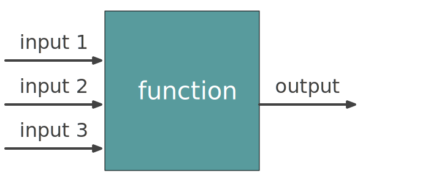 ]] --- # FP Function <br> .sixty-two-left[.center[ 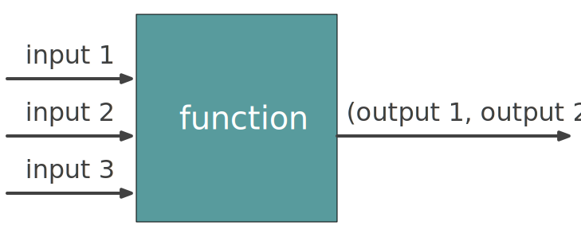 ]] --- # FP Function <br> .sixty-two-left[.center[ 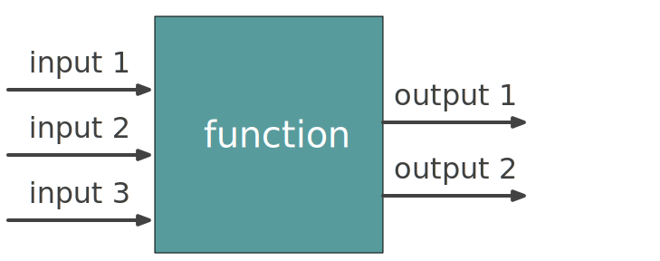 ]] --- # FP Function .sixty-two-left[.center[ 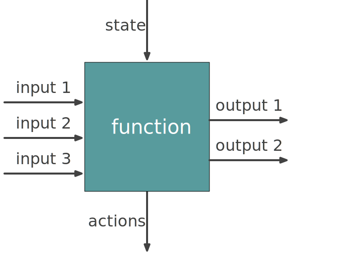 ]] --- <br><br><br> .sixty-two-left[.center[ 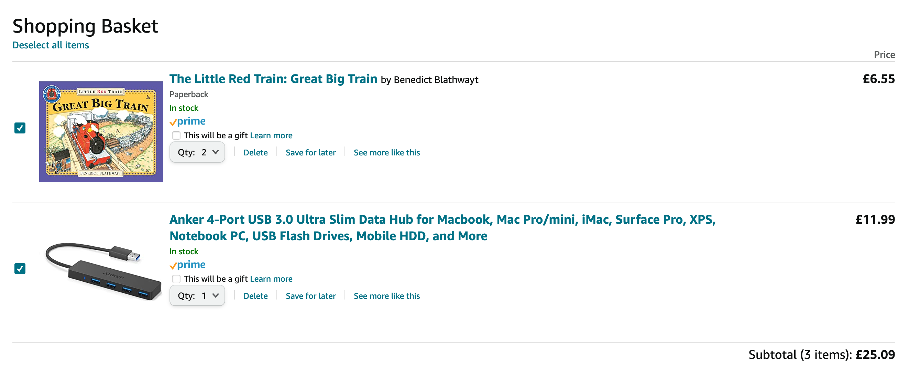 ]] --- <br><br> <img src="../img/screenshot/invoice.png" style="width:700px;"/> --- # Generate an invoice .fifty-two-left[ 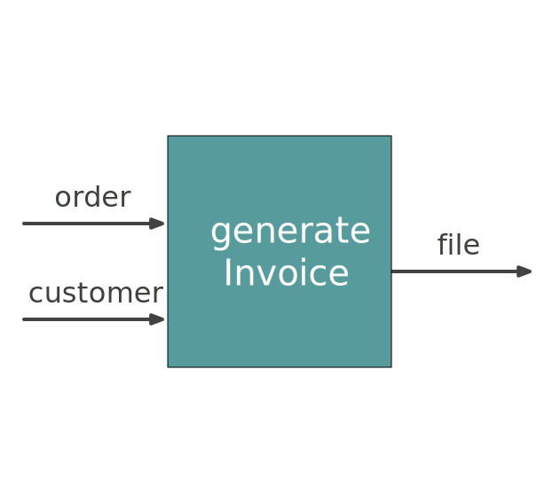 ] .forty-seven-right[.center[ <br><br><br><br> <img src="../img/screenshot/invoice.png" style="width:500px;"/> ]] --- # Golden Tests .sixty-two-left[ ```scala def invoiceTest( order : Order, customer: Customer, fileName: String ) = test(s"check invoice $fileName"){ val expected = readFile(fileName) val result = generateInvoice(order, customer) assert(result == expected) } invoiceTest(order1, bob, "invoice-bob-1.pdf") invoiceTest(order2, bob, "invoice-bob-2.pdf") invoiceTest(order2, eda, "invoice-eda-2.pdf") ``` ] --- # Generate an invoice .fifty-two-left[ 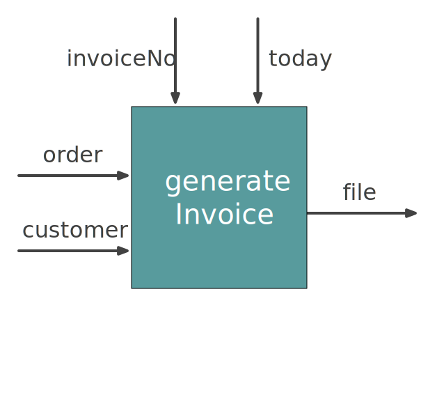 ] .forty-seven-right[.center[ <br><br><br><br> <img src="../img/screenshot/invoice.png" style="width:500px;"/> ]] --- # Dependency Injection .fifty-two-left[ 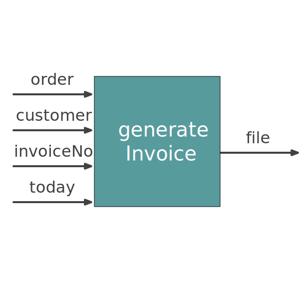 ] .forty-seven-right[.center[ <br><br><br><br> <img src="../img/screenshot/invoice.png" style="width:500px;"/> ]] --- # Generate an invoice in different languages <br><br> .forty-seven-left[.center[ <img src="../img/screenshot/invoice.png" style="width:500px;"/> ]] .forty-seven-right[.center[ 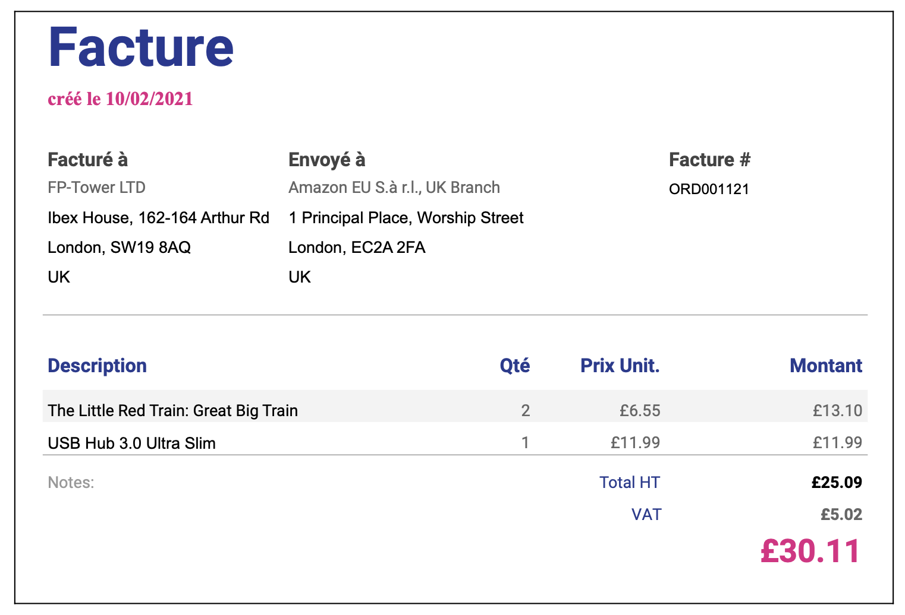 ]] --- # Generate an invoice in different languages .seventy-two-left[ 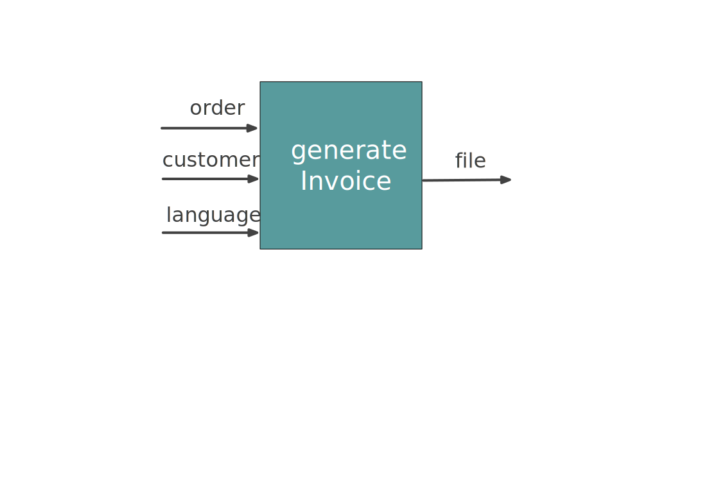 ] --- # Generate an invoice in different languages .seventy-two-left[ 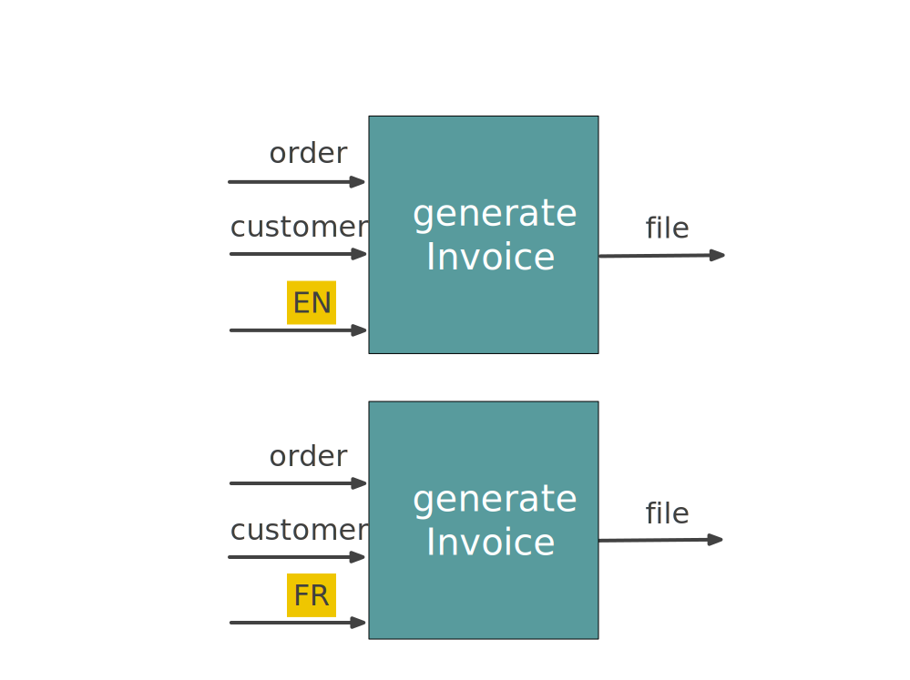 ] --- # Generate an invoice in different languages .seventy-two-left[ 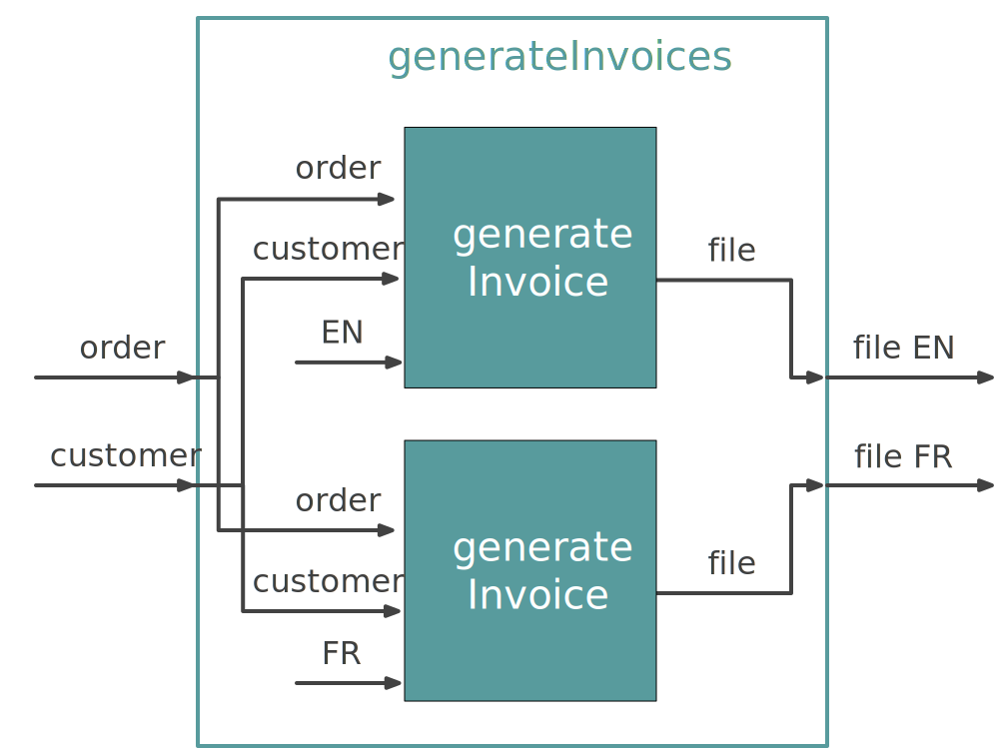 ] --- # Generate an invoice in different languages .seventy-two-left[ 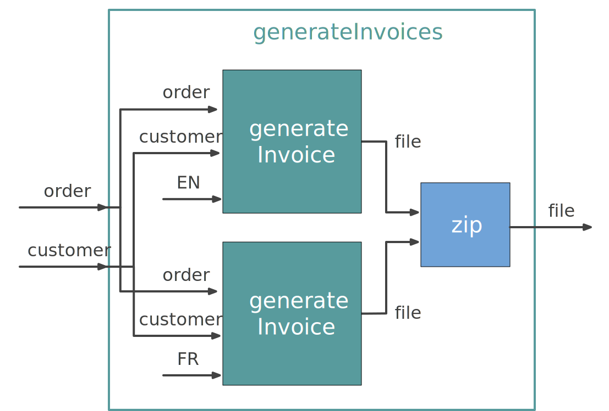 ] --- # Generate an invoice in different languages .seventy-two-left[ 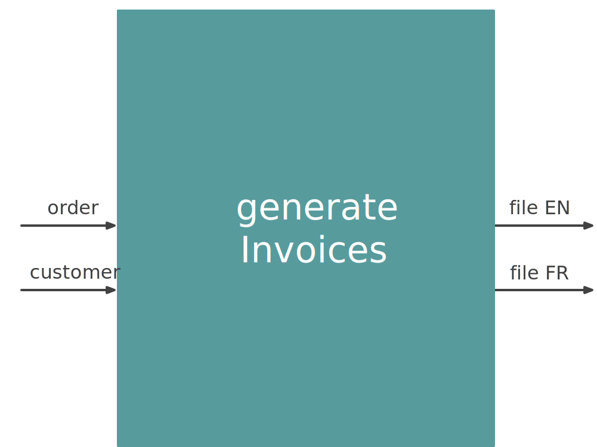 ] --- # Generate an invoice .fifty-two-left[ 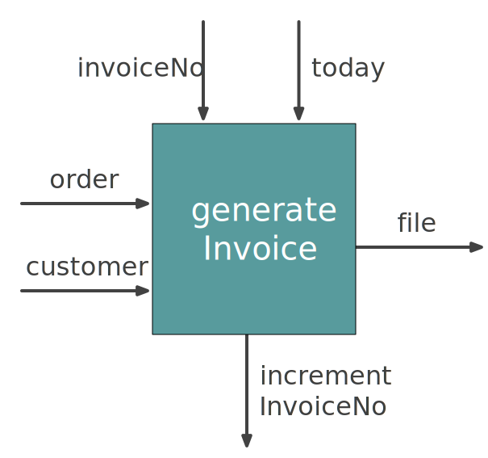 ] -- .forty-seven-right[.center[ 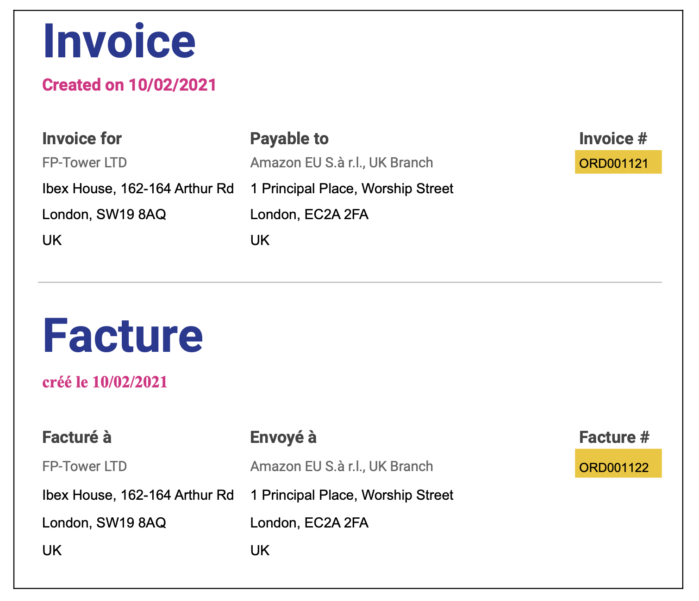 ]] --- # Generate an invoice (FP version) <br><br> .fifty-two-left[ <img src="../img/foundation/order-to-invoice-fp.svg" style="width:600px;"/> ] --- class: medium-code # Order API .sixty-seven-left[ ```scala class Order { def getStatus: OrderStatus // Draft, Submitted, Delivered, ... def addItem(item: Item): Unit def removeLastItem: Unit def totalPrice: Double } case class Item( name : String, quantity : Int, unitPrice: Double, ) ``` ] --- class: medium-code # Order API .sixty-seven-left[ ```scala class Order { def getStatus: OrderStatus // Draft, Submitted, Delivered, ... def addItem(item: Item): `Unit` def removeLastItem: `Unit` def totalPrice: Double } case class Item( name : String, quantity : Int, unitPrice: Double, ) ``` ] --- class: medium-code # Order uses mutation .sixty-two-left[ ```scala class Order { private var status: OrderStatus = Draft private val items : ListBuffer[Item] = new ListBuffer() def getStatus: OrderStatus = status def addItem(item: Item): Unit = items += item def removeLastItem: Unit = items.remove(items.size - 1) def totalPrice: Double = { var total = 0.0 for { item <- items } total += item.quantity * item.unitPrice total } } ``` ] --- class: medium-code # Order uses mutation .sixty-two-left[ ```scala class Order { private `var status: OrderStatus` = Draft private `val items : ListBuffer[Item]` = new ListBuffer() def getStatus: OrderStatus = status def addItem(item: Item): Unit = items += item def removeLastItem: Unit = items.remove(items.size - 1) def totalPrice: Double = { var total = 0.0 for { item <- items } total += item.quantity * item.unitPrice total } } ``` ] --- class: medium-code # Mutability .fifty-two-left[ ```scala class Order { private val items: ListBuffer[Item] = new ListBuffer() def addItem(item: Item): Unit = items += item def removeLastItem: Unit = if(items.nonEmpty) items.remove(items.size - 1) def totalPrice: Double = { var total = 0.0 for { item <- items } total += item.quantity * item.unitPrice total } } ``` ] .forty-two-right[ ```scala val order = new Order() order.addItem(Item("Battery", 3, 4.99)) order.addItem(Item("Book" , 1, 12.99)) order.totalPrice // res: Double = 27.96 order.removeLastItem order.totalPrice // res: Double = 14.97 ``` ] --- class: medium-code # Mutability .fifty-two-left[ ```scala class Order { private val items: ListBuffer[Item] = new ListBuffer() def addItem(item: Item): Unit = items += item def removeLastItem: Unit = if(items.nonEmpty) items.remove(items.size - 1) def totalPrice: Double = { var total = 0.0 for { item <- items } total += item.quantity * item.unitPrice total } } ``` ] .forty-two-right[ ```scala val order = new Order() order.addItem(Item("Battery", 3, 4.99)) order.addItem(Item("Book" , 1, 12.99)) order.totalPrice // res: Double = 27.96 order.removeLastItem order.`cancel` order.totalPrice // `???` ``` ] --- class: medium-code # Mutability .forty-seven-left[ ```scala val server = new HttpServer(...) server.initialize() server.start() ``` ] --- <br><br><br><br><br><br><br><br><br> .center[ # What makes a function difficult to test? ] --- # Global variables .forty-seven-left[ ```scala var eurToGBP = 0.70 def gbpAmount(priceEUR: Double): Double = priceEUR * eurToGBP ``` ```scala gbpAmount(12.99) // res: Double = 9.093 ``` ] --- # Global variables .forty-seven-left[ ```scala var eurToGBP = 0.70 def gbpAmount(priceEUR: Double): Double = priceEUR * eurToGBP ``` ```scala gbpAmount(12.99) // res: Double = 9.093 ``` ```scala // After Brexit eurToGBP = 0.89 gbpAmount(12.99) // res2: Double = 11.5611 ``` ] --- # Dependency injection .sixty-seven-left[ ```scala def gbpAmount(`eurToGBP`: Double, priceEUR: Double): Double = priceEUR * eurToGBP ``` ```scala gbpAmount(`0.70`, 12.99) // res: Double = 9.093 gbpAmount(`0.89`, 12.99) // res: Double = 11.5611 ``` ] --- # Dependency injection with classes .fifty-seven-left[ ```scala case class CurrencyConverter(`eurToGBP`: Double) { def gbpAmount(priceEUR: Double): Double = priceEUR * eurToGBP } ``` ```scala val nov2015 = CurrencyConverter(`0.70`) val jan2021 = CurrencyConverter(`0.89`) nov2015.gbpAmount(12.99) // res: Double = 9.093 jan2021.gbpAmount(12.99) // res: Double = 11.5611 ``` ] --- # Time & Random Data .forty-two-left[ ```scala case class BlogPost( id : Long, title : String, content : String, createdAt: Instant ) def createBlogPost(title: String) = BlogPost( id = Random.nextLong(99999), title = title, content = "", createdAt = Instant.now(), ) ``` ] .fifty-two-right[ ```scala val blogPost = createBlogPost("FP is awesome!") val expected = BlogPost( id = 12345, title = "FP is awesome!", content = "", createdAt = Instant.now(), ) assert(blogPost == expected) ``` ] --- # Time & Random Data .seventy-seven-left[ ```scala val blogPost = createBlogPost("FP is awesome!") val expected = BlogPost( id = 12345, title = "Welcome", content = "", createdAt = Instant.now(), ) assert(blogPost == expected) // test failed, values are not the same // Expected :BlogPost(`12345`,Welcome,,2021-01-22T15:57:47.8968`61`Z) // Actual :BlogPost(`59996`,Welcome,,2021-01-22T15:57:47.8968`47`Z) ``` ] --- class: medium-code # Time & Random Data .forty-seven-left[ ## Partial test ```scala val blogPost = createBlogPost("FP is awesome!") val expected = BlogPost( id = 12345, title = "Welcome", content = "", createdAt = Instant.now(), ) assert(blogPost.`title` == "Welcome") assert(blogPost.`content` == "") ``` ] .forty-seven-right[ ## Erase random data ```scala val blogPost = createBlogPost("FP is awesome!") `.copy(id = 0, createdAt = Instant.EPOCH)` val expected = BlogPost( id = 0, title = "Welcome", content = "", createdAt = Instant.EPOCH, ) assert(blogPost == expected) ``` ] --- # Time & Random Data .forty-two-left[ ```scala def createBlogPost(id: Long, title: String, createdAt: Instant) = BlogPost( id = id, title = title, content = "", createdAt = createdAt, ) ``` ] .fifty-two-right[ ```scala val blogPost = createBlogPost("FP is awesome!") val expected = BlogPost( id = 12345, title = "FP is awesome!", content = "", createdAt = Instant.now(), ) assert(blogPost == expected) ``` ]